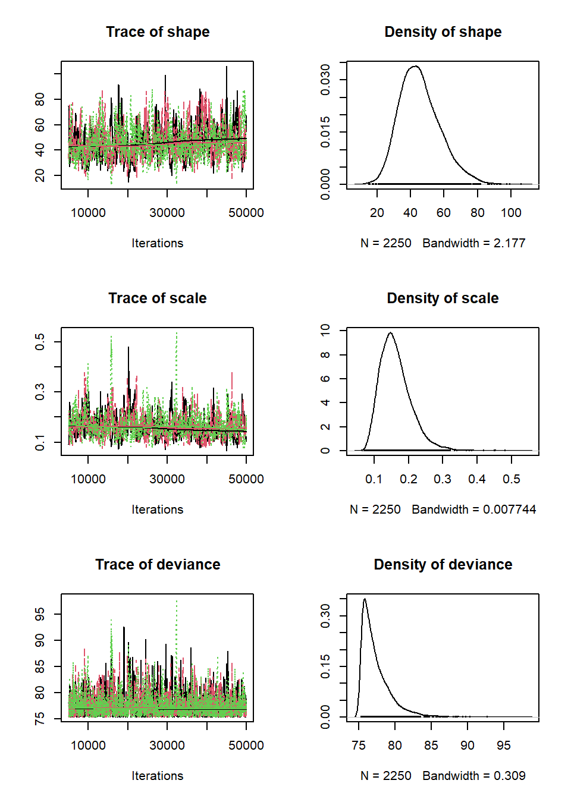
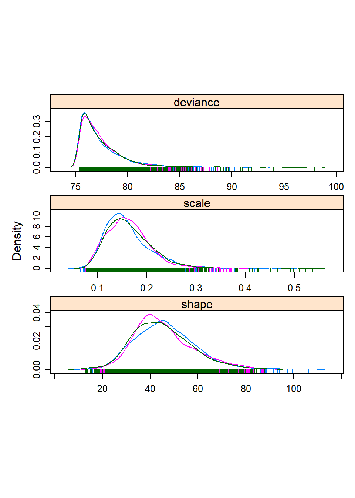

Lab Exercise 4
NRES 746
October 26, 2016
Bayesian inference (with BUGS!)
NOTE: thanks to Elizabeth Hunter for putting together much of this lab!
Lab 4 is due before midnight on Friday November 18
In this lab we will be applying a Bayesian approach to model fitting using the same myxomatosis dataset and model that we used in the previous likelihood lab. To do this, we’ll be using the program JAGS (Just Another Gibbs Sampler).
JAGS is already installed in the computers here in the lab. But if you want to install this software on your own computer, you can go to this website:
https://sourceforge.net/projects/mcmc-jags/files/JAGS/4.x/
JAGS runs seamlessly with R, if you download the “R2jags” package!
JAGS is not the only way to do Bayesian analyses, nor is it the only implementation of the BUGS (Bayesian inference Using Gibbs Sampler) language. Others that you may have heard of include WinBUGS and OpenBUGS.
To familiarize ourselves with the BUGS language, let’s look at some BUGS code (for our favorite myxomatosis dataset).
model {
#############
# LIKELIHOOD
############
for(obs in 1:n.observations){
titer[obs] ~ dgamma(shape,rate)
}
#############
# PRIORS
############
shape ~ dgamma(0.01,0.01)
scale ~ dgamma(0.001,0.001)
rate <- 1/scale # in BUGS, gamma distribution needs a "rate" parameter rather than a scale
}The syntax in BUGS/JAGS is very similar to R, but there are a few key differences. Most important, assignment must always be done by the arrow (<-) instead of an equals sign for deterministic functions and the tilde (~) is used to define stochastic processes.
In the model code, you must also specify your priors. Here we are using relatively vague priors, meaning that the probability is spread out fairly evenly over parameter space. The Gamma distribution is always parameterized as shape and rate in BUGS. If you wanted to see what this distribution looked like, you could plot in R:
par(mfrow=c(2,1))
curve(dgamma(x, shape=0.01, rate=0.01),3,100,ylim=c(0,0.1),xlab="shape parameter",ylab="probability density", main="Prior")
curve(dgamma(x, shape=0.001, rate=0.001),0.01,0.5,ylim=c(0,1),xlab="scale parameter",ylab="probability density")
In this case we want a prior distribution that has little to no information about which values of the parameter are most probable. These distributions have no peaks within the range of parameter space of interest, and the probability for any particular x-value is very low, so it does a fairly good job of representing a vague prior for the shape and rate parameters.
Running JAGS through R
Setting up the model!
We can use the R2JAGS package in R to run JAGS through R and have the output returned to R so that we can analyze and manipulate it further.
First, install and load the R2jags package. While you’re at it, install and load the coda package, which has some great utilities for visualizing and working with MCMC data.
library(R2jags)## Loading required package: rjags## Loading required package: coda## Linked to JAGS 4.2.0## Loaded modules: basemod,bugs##
## Attaching package: 'R2jags'## The following object is masked from 'package:coda':
##
## traceplotlibrary(coda)Writing out the model
We can use the ‘sink’ function in R to write out a text file- it can be useful to use this functionality to embed the JAGS code within our R script!
sink("BUGSmodel.txt")
cat("
model {
#############
# LIKELIHOOD
############
for(obs in 1:n.observations){
titer[obs] ~ dgamma(shape,rate)
}
#############
# PRIORS
############
shape ~ dgamma(0.01,0.01)
scale ~ dgamma(0.001,0.001)
rate <- 1/scale
}
")##
## model {
##
## #############
## # LIKELIHOOD
## ############
## for(obs in 1:n.observations){
## titer[obs] ~ dgamma(shape,rate)
## }
##
## #############
## # PRIORS
## ############
## shape ~ dgamma(0.01,0.01)
## scale ~ dgamma(0.001,0.001)
## rate <- 1/scale
## }
## sink()Packaging the data
We will need to tell BUGS/JAGS what the data are. To be read into JAGS (via the R2JAGS package), the data need to be bundled together in a list. The data need to have the same names as specified in the model file:
First we get the data we want into R (we know the drill!):
library(emdbook)
MyxDat <- MyxoTiter_sum
Myx <- subset(MyxDat,grade==1) #Data set from grade 1 of myxo data
head(Myx)## grade day titer
## 1 1 2 5.207
## 2 1 2 5.734
## 3 1 2 6.613
## 4 1 3 5.997
## 5 1 3 6.612
## 6 1 3 6.810Then we package the data!
myx.data.for.bugs <- list(
titer = Myx$titer,
n.observations = length(Myx$titer)
)
myx.data.for.bugs## $titer
## [1] 5.207 5.734 6.613 5.997 6.612 6.810 5.930 6.501 7.182 7.292 7.819
## [12] 7.489 6.918 6.808 6.235 6.916 4.196 7.682 8.189 7.707 7.597 7.112
## [23] 7.354 7.158 7.466 7.927 8.499
##
## $n.observations
## [1] 27Setting the initial values for our Markov chain(s)
init.vals.for.bugs <- function(){
list(
shape=runif(1,20,100),
scale=runif(1,0.05,0.3)
)
}
init.vals.for.bugs()## $shape
## [1] 36.00791
##
## $scale
## [1] 0.2894932init.vals.for.bugs()## $shape
## [1] 36.94518
##
## $scale
## [1] 0.2287309Alternatively, we can specify exact initial values for our chains (in this case, we initialize three Markov chains)
inits = list(list(shape=90,scale=0.1), list(shape=50,scale=0.2), list(shape=150,scale=0.04))Note that we need three different sets of starting values here because we are running three different chains. Recall that initial values are required, and you may want to use the same tricks as we have used before (e.g., method of moments) to identify reasonable starting values. JAGS will not work if you specify unreasonable initial parameters (and it won’t necessarily tell you that is the problem).
Now we’ll run this model through JAGS:
params.to.store <- c("shape","scale") # specify the parameters we want to get the posteriors for
jags.fit <- jags(data=myx.data.for.bugs,inits=init.vals.for.bugs,parameters.to.save=params.to.store,n.iter=50000,model.file="BUGSmodel.txt",n.chains = 3,n.burnin = 5000,n.thin = 20 )## module glm loaded## Compiling model graph
## Resolving undeclared variables
## Allocating nodes
## Graph information:
## Observed stochastic nodes: 27
## Unobserved stochastic nodes: 2
## Total graph size: 37
##
## Initializing modeljags.fit## Inference for Bugs model at "BUGSmodel.txt", fit using jags,
## 3 chains, each with 50000 iterations (first 5000 discarded), n.thin = 20
## n.sims = 6750 iterations saved
## mu.vect sd.vect 2.5% 25% 50% 75% 97.5% Rhat n.eff
## scale 0.161 0.048 0.093 0.126 0.152 0.186 0.281 1.007 300
## shape 46.633 12.847 24.852 37.308 45.489 54.893 74.288 1.008 300
## deviance 77.424 2.059 75.384 75.949 76.789 78.274 82.909 1.006 810
##
## For each parameter, n.eff is a crude measure of effective sample size,
## and Rhat is the potential scale reduction factor (at convergence, Rhat=1).
##
## DIC info (using the rule, pD = var(deviance)/2)
## pD = 2.1 and DIC = 79.5
## DIC is an estimate of expected predictive error (lower deviance is better).For each parameter, n.eff is a crude measure of effective sample size, and Rhat is the potential scale reduction factor (at convergence, Rhat=1).
DIC info (using the rule, pD = Dbar-Dhat) pD = 3.0 and DIC = 65.3 DIC is an estimate of expected predictive error (lower deviance is better).
You can see the means and variance for the parameters as well as the DIC for the model. We can summarize these in plots of the posterior distributions. First, we need to define the MCMC output as a coda object that R knows how to work with.
jagsfit.mcmc <- as.mcmc(jags.fit) # convert to "MCMC" object (coda package)
summary(jagsfit.mcmc)##
## Iterations = 5001:49981
## Thinning interval = 20
## Number of chains = 3
## Sample size per chain = 2250
##
## 1. Empirical mean and standard deviation for each variable,
## plus standard error of the mean:
##
## Mean SD Naive SE Time-series SE
## deviance 77.424 2.0593 0.0250652 0.056455
## scale 0.161 0.0485 0.0005903 0.002111
## shape 46.633 12.8470 0.1563683 0.604127
##
## 2. Quantiles for each variable:
##
## 2.5% 25% 50% 75% 97.5%
## deviance 75.38440 75.9486 76.7891 78.274 82.9095
## scale 0.09292 0.1258 0.1521 0.186 0.2812
## shape 24.85173 37.3083 45.4892 54.893 74.2878plot(jagsfit.mcmc)
library(lattice)
densityplot(jagsfit.mcmc)
You can visually check for convergence here, using the trace plots – a converged run will look like white noise and the samples will not be hitting any ceilings or floors.
Parameter uncertainty: credible intervals
We can estimate the 95% credible interval by calling directly from the bugs output. The “sims.list” part of the output has all of the samples that were created during the run.
shape95 = quantile(jags.fit$BUGSoutput$sims.list$shape,c(0.025,0.975))
scale95 = quantile(jags.fit$BUGSoutput$sims.list$scale,c(0.025,0.975))
shape95## 2.5% 97.5%
## 24.85173 74.28779scale95## 2.5% 97.5%
## 0.09291747 0.28118530The probability that the a parameter is between these 2 numbers is actually 95%!
So, what’s so great about this? Using a vague prior, we get almost the exact same parameter estimates that we did when we just did a straight up likelihood model. This is usually the case with simple models like the run we ran here. However, answers can be quite different with more complicated models, and in fact the Bayesian approach allows us to simultaneously fit complex models that we could not do effectively using likelihood-based approaches. That said, there are 2 main advantages to the Bayesian approach, both having to do with the fact that the answer comes in the form of a probability distribution instead of a point estimate. First, the credible interval is much nicer to interpret than a confidence interval. There’s none of this “given that the null hypothesis is true, and we were to resample the data 100 times…”. You can state simply that there’s a 95% probability that the value of the parameter lies within the credible interval. Period. Second, and more importantly from a pragmatic standpoint, you can draw from these parameter probability distributions to create simulations that include the full variability of outcomes instead of just point estimates, which will demonstrate the implications of your parameter estimates (e.g. under different management scenarios, climate change, etc.). We’ll explore how to do this a little later.
QUESTION 1: Myxomatosis with Ricker
- Run the myxomatosis/Ricker example from the previous (likelihood) lab in JAGS! Run three chains. Display the trace plots and density plots. Provide point estimates and 95% confidence intervals for all three parameters. Overlay the Ricker curve, with Bayesian point estimates, on the data to evaluate fit.
- Can you identify any differences between the parameter estimates from the analysis in a likelihood vs Bayesian perspective?
- Follow the procedure outlined in the MCMC lecture to assess convergence. Did your MCMC chains converge on the joint posterior distribution? Explain your reasoning! Use several lines of reasoning!
QUESTION 2: Myxomatosis with Michaelis-Menten function
Recalling our plot (from the last lab) of the Ricker function with the maximum-likelihood parameter estimates drawn over the scatterplot of titers by day, there really isn’t much evidence in the data for that downward turn in the function after day 6. We chose a model that indicated decline in titer levels following a peak based on the behavior of other myxomytosis grades, but given the virulence of this particular grade most animals die once the titer levels reach their maximum. Might it be more appropriate to fit a model that levels off at some asymptote instead of declining following the peak? Repeat the myxomatosis example in BUGS, but this time use the Michaelis-Menten function, which has the same number of parameters as the Ricker function, but increases to an asymptote (see below). Continue to use a Gamma distribution to describe the error! Answer the following questions:
- Display the trace plots and density plots. Provide point estimates and 95% confidence intervals for all parameters. Overlay the M-M curve, with Bayesian point estimates, on the data to evaluate fit.
- Overlay both the best-fit M-M and the best-fit Ricker curves on a plot of the data. On the basis of simple visual cues, does the M-M function seem to fit better than the Ricker function to describe this relationship? Explain your reasoning.
- Follow the procedure outlined in the MCMC lecture to assess convergence. Did your MCMC chains converge on the joint posterior distribution? Explain your reasoning! As above, use several lines of reasoning!
The M-M function looks like this:
\(\frac{a\cdot x}{b+x}\)
You can plot an M-M function over the points to get some initial parameter estimates.
plot(Myx$titer~Myx$day,xlim=c(0,10),ylim=c(0,10))
curve(mm(x,a=9,b=0.7),from=0,to=10,add=T,col="red")
## Compiling model graph
## Resolving undeclared variables
## Allocating nodes
## Graph information:
## Observed stochastic nodes: 27
## Unobserved stochastic nodes: 3
## Total graph size: 96
##
## Initializing model##
## Iterations = 501:4996
## Thinning interval = 5
## Number of chains = 3
## Sample size per chain = 900
##
## 1. Empirical mean and standard deviation for each variable,
## plus standard error of the mean:
##
## Mean SD Naive SE Time-series SE
## a 8.799 0.5199 0.010006 0.02293
## b 1.175 0.3056 0.005881 0.01367
## deviance 55.719 2.9513 0.056797 0.07880
## shape 99.619 28.0327 0.539489 0.53969
##
## 2. Quantiles for each variable:
##
## 2.5% 25% 50% 75% 97.5%
## a 7.8276 8.4563 8.778 9.132 9.898
## b 0.6225 0.9687 1.161 1.381 1.803
## deviance 52.4342 53.6079 54.948 56.912 63.620
## shape 52.2053 79.7834 97.138 117.134 161.604
QUESTION 3. Goodness-of-fit and model comparison
DIC (analogous to AIC) is a model selection criterion for Baysian models fitted with MCMC. Just like for AIC, models with smaller values of DIC are favored. Which model (M-M or Ricker) is the better model based on DIC? What does the difference in DIC mean in terms of the strength of evidence in support of one of these models as the “best model”? [You should be aware that DIC is not a perfect solution for Bayesian model selection. For one, it is only valid if the posterior is approximately multivariatge normal. Also, DIC tends to select overfitted models!]
Let’s try a different approach for visualizing the fit of these two models. For each of these models, use the pseudocode provided below to evaluate goodness-of-fit. Which model appears to fit the data better? On the basis of a posterior predictive check (see below), how well would you say each model fits the observed data? Do you see any red flags that would indicate poor goodness of fit? Explain your reasoning.
Compute the Bayesian p-value described below. How do you interpret this metric? What Bayesian p-value would you expect if the model fit was perfect? What would you expect if the model fit was poor? What does the Bayesian p-value tell us about how well the Ricker and M-M models fit the data? Does one model fit better than the other?
Pseudocode for Goodness-of-fit test
- Step 1: Generate new data under the fitted model. For each of an arbitrarily large number of replicates:
- sample from the joint posterior distribution
- pick a random integer between 1 and the number of MCMC samples (e.g., call that number “random_index”)
- Then, use that random index to select a single random sample from the joint posterior.
- This will look something like this: new.draw <- jags.fit\(BUGSoutput\)sims.list[random_index]
- use those parameters (drawn from the posterior distribution) to simulate a data set
- for each titer observation, and using the params sampled from the posterior, generate a single random number under the gamma distribution defined by the Ricker or M-M model
- use a standard discrepancy metric–sum of squared error– to compute the degree to which the simulated data deviate from the expected value.
- for each simulated data point, compute the squared residual error- that is, the squared difference between the simulated data point and the expected value from the Ricker or M-M model.
- for each observed data point, compute the squared residual error- that is, the squared difference between the simulated data point and the expected value from the Ricker or M-M model.
- compute the sum of squared errors for both the observed data and the simulated data corresponding to this sample from the joint posterior distribution.
- sample from the joint posterior distribution
Step 2: Just like the goodness-of-fit tests we did in the “Virtual Ecologist” lab, use the boxplot function to display the range of plausible data that could be generated under the fitted model (using the data simulated under the fitted model). Overlay the observed data. This provides a visual goodness-of-fit evaluation. Based on a visual inspection, how well does the model fit the data?
Step 3: Plot the sum of squared error for the simulated data sets (Y axis) against the sum of squared error for the actual data set. Overlay a 1:1 line (that is, the line corresponding to y=x). This is called a Posterior Predictive Check.
Step 4: Compute the percent of the time that the discrepancy metric (SSE) for the simulated data exceeds the discrepancy metric for the observed data. This quantity is often called a Bayesian p-value.
QUESTION 5
We are missing information on the behavior of this system in the later days because the virus is too virulent at this grade and kills the rabbits too quickly. We do, however, have information on the late stage behavior from other grades. How might you incorporate that information into the analysis for grade 1? Respond in short paragraph only, no analysis or coding required (this is just a thought experiment!)